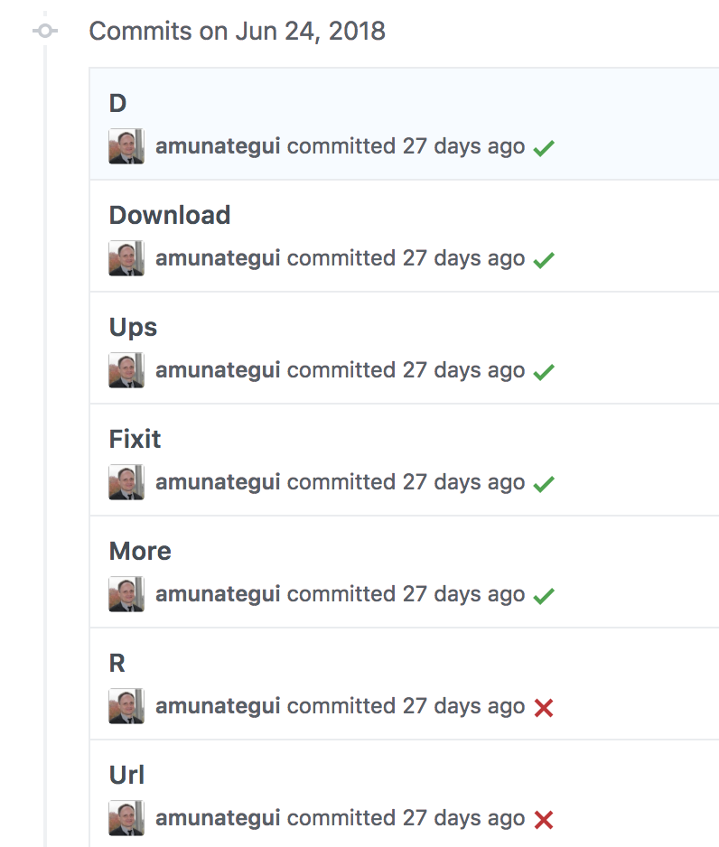
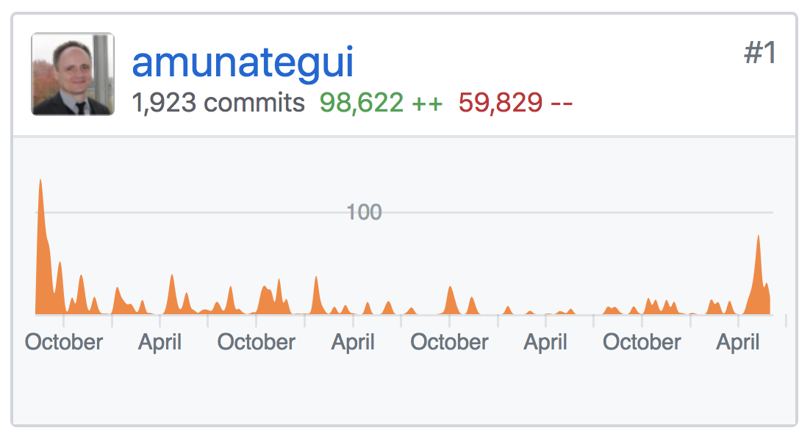

Your Git Commit Comments, and What They Reveal About You
Resources

Source: Lucas Amunategui
This wouldn’t be as interesting if GitHub.com didn’t publish our commit comments to the world. Go to any GitHub repo, click on any file and then click on the “History” button to see for yourself. Feeling vulnerable and naked? You can’t lie about your commenting track record. And because GitHub Desktop won’t allow you to commit without a comment, mine are full of gibberish.
And that’s what makes me a great spokesperson to talk about Git commenting. Let me tell you why…
It’s Not My Fault, I Did It for You
The majority of my comments are nonsensical, like a character or three, usually keystrokes close together and around the left hand as the right hand is too busy hovering near the return key. If you’re left handed, you may see the opposite pattern. This is my routine to get my fixes into GitHub ASAP.
In my defense, I am only guilty of this behavior on my own data science blog, amunategui.github.io, which is a GitHub Pages site. When I am working on a collaborative project, I tend to be a lot more diligent with my commenting.
I’m the only one managing amunategui.github.io. The edits there are purely mechanical or editorial and that works to your advantage. Because the site gets some 10k visits a month, I want those fixes to go in as quickly as possible. If you use that site, you won’t be offended by errors or misinformation for long, exactly because I am quick on the commit! See? I do it for you — you’re welcome. And I hate being humiliated by typos…

Yes, succinct and useless comments on my amunategui.github.io index.html page along with a picture so you know exactly who’s to blame.But, as I am attempting to be a better tech-thought leader, I am embarrassed by this and feel the need to confess. And now, after writing this post, I promise not to do it anymore.
And that is why this makes me a great spokesperson on this topic. Those that are great at commenting come off as patronizing, and those that don’t care, well, they’re not around to read this. It is the person in between, feeling guilty and looking to change, they will say it as it is.
What Is Git
Just in case you’ve been living under a rock, Git is the great, free, and ubiquitous version control tool. It will store your code and any changes, updates, or deletions through time in a repository. It is tightly integrated with online repos like GitHub, GitLab, BitBucket, etc., which are critical for code safeguard and collaboration in the cloud.
Can You Tell What You Did Six Months After a Commit?
And that’s the whole point — if you mostly work solo, comments will help you understand what you did, why you fixed something, what was happening before. This will help you determine exactly where you need to go to rollback or dig out features that you removed or don’t want to rewrite from scratch. If you work on a team and you put bad comments, you’ll be hearing from teammates or a boss very soon, trust me (or so my friend tells me). You don’t have to write novels, add punctuation or jokes (unless you’re quirky, and quirky is cool) but it has to be useful. If you do this well, one day, you’ll thank yourself (and me) as this tool will save your rear end.
So, What Does This All Say About You?
I swear, I am not a bad person, just a tad overworked and in need of regular reminders to build up my Git commenting muscle.
Do you understand the importance of version control, follow rules, have long-term vision, have compassion for your colleagues, are detailed oriented, etc.? Then your commenting on Git is shouting that you’re awesome!
On the other hand, if you’re like me and you’re committing way to often (400 commits a year for my blog’s repo), then you’ll need to step up your efforts or slow down your commits because you’re missing one of the best features of this tool.

1,923 commits by me on my GitHub.io PagesAnd no, I do understand the importance of version control. I (sometimes) follow rules. I have long-term vision, I definitely have compassion for my colleagues. I am (somewhat) detailed oriented. I swear, I am not a bad person, just a tad overworked and in need of regular reminders to build up my Git commenting muscle. And if you’re anywhere in between awesome and awful, then you too need to work on that muscle.
Thanks! And please share this article with a friend or colleague or two :-)
Manuel Amunategui
Curator @ amunategui.github.io and ViralML